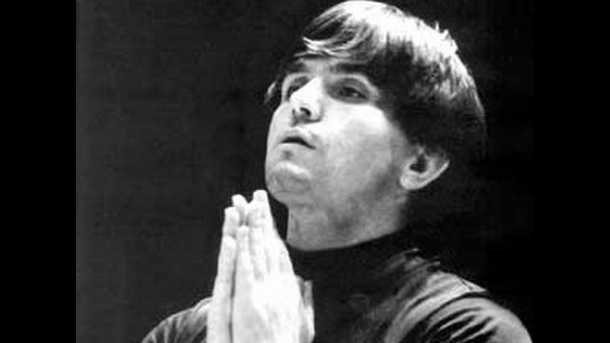

Емил Чакъров
Емил Чакъров е роден на 29 юни 1948 г. в Бургас. Още като дете Емил посещава първите уроци по цигулка в родния си град, където на 6-годишна възраст е открит необичайния му талант. Опитва се да дирижира и заявява, че ще стане диригент. Когато е в V клас, казват на родителите му, че в Бургас няма какво повече да научи и, те го изпращат на уроци в София, въпреки трудностите.Емил влиза в Софийската музикална гимназия през 1962 г. (цигулка). Когато е на 15 години, започва да изучава и дирижиране. Той завършва Музикалната гимназия като цигулар в класа на Петър Арнаудов. От 1967 до 1971 г. е студент в Софийската консерватория, където дирижира оркестъра. В софийското читалище „Владимир Заимов“ Емил среща учителката по музика Възкреса Капнилова. След завършване на Консерваторията той е поканен от Капнилова за диригент на струнен оркестър, който тя създава към читалището.лияние върху неговото развитие оказва запомнящ се случай от 60-те години. Емил чува музикално изпълнение по Националното радио преди осведомителния бюлетин в 12 ч., но не съобщават името на диригента. Той е силно впечатлен от музиката и отива пеша от Драгалевци радиото, където се среща с дежурния редактор, за да разбере кой дирижира оркестъра. Когато му отговарят, че е Херберт фон Караян, Емил Чакъров за първи път чува това име, но световноизвестният диригент става негов кумир решава, че един ден ще се срещне с него и това се случва. Чрез Възкреса Капнилова младият Емил е въведен сред музикалните среди и културния елит. Представен е на тогавашния председател на Комитета за култура Павел Матев и препоръчан за участие в конкурса по дирижиране на Херберт фон Караян в Берлин. Талантът му е оценен и въпреки че недочува с едното ухо, постъпва на лечение във Военна болница, след което е изпратен в Берлин. Там през 1971 г. печели награда на 2-ия международен конкурс по дирижиране. На 23 години той е най-младият лауреат на конкурса на Караян. Впоследствие става негов асистент в оперните продукции в Залцбург и Берлин и продължава своите проучвания в Хилверсум и Танглуд. През 1973 – 1974 година Емил Чакъров е в творчески контакти със Сейджи Озава, Ленард Бърнстейн, Зубин Мета и др. От 1974 до 1978 г. е главен диригент на Пловдивската филхармония. През 1977 г. основава оркестър „Симфониета“ в София. Няколко години след първата си Караянова награда от конкурса Емил получава още една. Към края на 70-те години, едва на 30 години е сред най-известните и скъпоплатени диригенти в Европа. Той гостува на много оркестри по света: дирижира Берлинската филхармония, Миланската скала, Френския национален оркестър, Лондонския симфоничен оркестър, Оркестър Tonhalle (Цюрих) и Чешкия филхармоничен оркестър. Почти избягва да се връща в България и натрупва богатство. Сред придобивките му са просторен апартамент в центъра на Париж и триетажна къща в Монако. Гастролира и извън Европа: Израелската филхармония, Националния ирански радио- и телевизионен камерен оркестър, Бостънския симфоничен оркестър, Оркестъра на Лос Анджелис. През 1979 г. дебютира в Метрополитън опера в Ню Йорк, както и в други американски градове с Евгений Онегин, връщайки се за Севилският бръснар и Борис Годунов. През 1986 г. по идея на Емил Чакъров министърът на културата на България Георги Йорданов създава Софийския фестивален симфоничен оркестър към НДК с подкрепата на известни български музиканти, като провежда конкурс за всяка партия и за всеки индивидуален изпълнител. Там свирят най-добрите български инструменталисти от операта и филхармонията. Чакъров основава Новогодишния фестивал в София, който се провежда ежегодно с участието на артисти с международна слава – Пласидо Доминго, Николай Гяуров, Елизабет Шварцкопф, Мирела Френи и др. Дирижира Реквием (Джузепе Верди) на фестивалите в София през 1987 г. и в Люцерн. Под ръководството на маестро Чакъров преминават четири издания на форума. В края на 80-те години поради неговата международна известност Кълъмбия Рекърдс го ангажира да запише поредица от шест руски опери, което той прави в продължение на четири години на Софийския фестивал в създаденото звукозаписно студио в НДК .